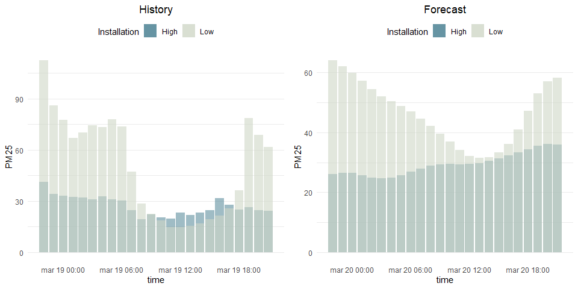
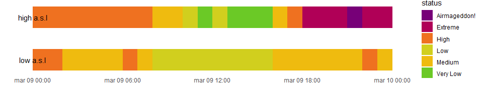

aiRly is an unofficial R wrapper for Airly, platform which mission is to monitor and inform millions of people about the current state of air quality.
Installation
You can install current development version of aiRly from GitHub with:
Example
This is a basic example of package usage. First, we would like to check if there are any near stations in range of 20 km. We set max_results to -1 in order to get all stations in the neighbourhood
library(aiRly)
library(dplyr)
set_apikey("dFpHFmGiqCyDdc9TIv8dp0v9iL6PEBwW")
stations <- get_nearest_installations(50.11670, 19.91429, max_distance = 20, max_results = -1)Let’s filter only for Airly stations and choose stations which are located at the highest and lowest point a.s.l.
minmax_station <- stations %>%
filter(airly) %>%
summarize(min_elevation_id = id[which.min(elevation)],
max_elevation_id = id[which.max(elevation)])
highest_installation <- get_installation_measurements(minmax_station$max_elevation_id)
lowest_installation <- get_installation_measurements(minmax_station$min_elevation_id)Ok, we have just received information about current state, last 24h history and forecasts for next day for both installations.
Let’s make some visualizations

We can see that most of the time, air quality is worse (and will be) in lower part of Krakow. Ok, but are those sensors readings indicating high pollution? We can check it using get_indexes function, which fill translate values of AIRLY_CAQI variable
indexes <- get_indexes()
airly_caqi <- indexes %>% filter(name == "AIRLY_CAQI")
airly_caqi[is.na(airly_caqi)] <- Inf
history_high <- highest_installation$history
history_high$status <- unlist(lapply(history_high$AIRLY_CAQI,
function(x) airly_caqi[x >= airly_caqi$minValue & x <= airly_caqi$maxValue, "description"]))
history_low <- lowest_installation$history
history_low$status <- unlist(lapply(history_low$AIRLY_CAQI,
function(x) airly_caqi[x >= airly_caqi$minValue & x <= airly_caqi$maxValue, "description"]))
g <- ggplot() +
geom_rect(history_high, mapping = aes(xmin=from, xmax = to, ymin=0, ymax=.1, fill = status)) +
geom_rect(history_low, mapping = aes(xmin=from, xmax = to, ymin=0.2, ymax=.3, fill = status))+
scale_fill_manual(values = c("Very Low" = "#6BC926",
"Low" = "#D1CF1E",
"Medium" = "#EFBB0F",
"High" = "#EF7120",
"Very High" ="#EF2A36",
"Extreme" = "#B00057",
"Airmageddon!" = "#770078")) +
annotate("text", x = min(history_high$from), y = 0.25, label = "high a.s.l") +
annotate("text", x = min(history_low$from), y = 0.05, label = "low a.s.l") +
theme_minimal() +
theme(panel.grid = element_blank(),
axis.text.y = element_blank()) +
ylab("") +xlab("")
g
After we made few requests, we would like to check how many we have left. We will simply use remaining_requests